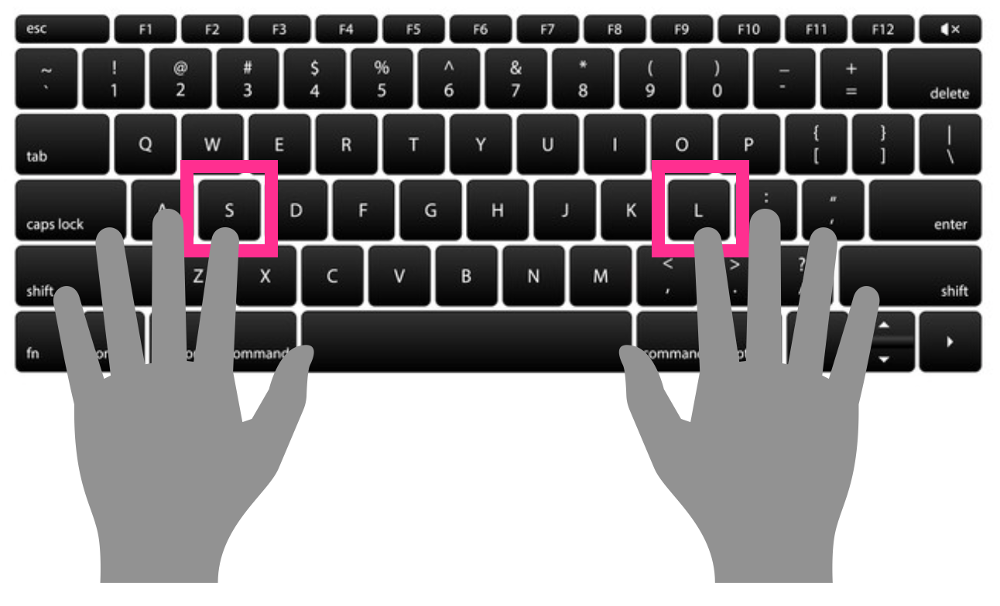

You will listen to some word pairs. One speaker will say the first word in the pair and another speaker will say the second word in the pair.
Your task is to decide whether the second word in the pair is a real word or a made up word.
The experiment will take approximately 20 minutes.
You will receive a $5 Amazon Gift Card for your participation.
Please note you will have to provide your email at the end of the study to receive compensation.
LEGAL INFORMATION:
Nonmedical Human Participants Waiver of Documentation
STUDY TITLE: The Perception of Latino Varieties of English.
Protocol Director: Alexia Hernandez
DESCRIPTION: You are invited to participate in a research study. Its general purpose is to understand how people recognize words and perceive auditory stimuli. We are interested in how people communicate across language varieties and how acoustic properties of speech are used and stored by speakers. You will be asked to listen to lists of words or word pairs and make simple decisions about them.
RISKS AND BENEFITS: There are no known risks, costs, or discomforts in this study and this judgment is based on a large body of experience with the same or similar procedures with people of similar ages, sex, origins, etc. We cannot and do not guarantee or promise that you will receive any benefits from this study. You will help us to understand how people recognize and perceive auditory stimuli.
TIME INVOLVEMENT: Your participation in this experiment will take less than one hour.
PAYMENTS: You will receive approximately $15/hr for your participation.
SUBJECT'S RIGHTS: If you have read this form and have decided to participate in this project, please understand your participation is voluntary and you have the right to withdraw your consent or discontinue participation at any time without penalty or loss of benefits to which you are otherwise entitled. You have the right to refuse to answer particular questions. Your individual privacy will be maintained in all published and written data resulting from the study.
CONTACT INFORMATION:
Questions, Concerns, or Complaints: If you have any questions, concerns or complaints about this research study, its procedures, risks and benefits, you should ask the Protocol Director, Alexia Hernandez at (802) 377-7923.
Independent Contact: If you are not satisfied with how this study is being conducted, or if you have any concerns, complaints, or general questions about the research or your rights as a participant, please contact the Stanford Institutional Review Board (IRB) to speak to someone independent of the research team at (650)-723-2480 or toll free at 1-866-680-2906. You can also write to the Stanford IRB, Stanford University, Stanford, CA 94305-5401 or email irbnonmed@stanford.edu.
WAIVER OF DOCUMENTATION:
If you agree to participate in this research, please continue on to the study.
IRB approval date: 4/29/21
Expiration date: (Does not expire)
Please listen to the audio and type in the word indicated.
You will now start two short practice trials.
You will hear a real word followed by another word.
Sometimes the second word in the pair will be a REAL word and sometimes the second word in the pair will be a made up word (a PSEUDO word).
Your task is to decide whether the second word in the pair is a real word (like RUG) or a pseudo-word (like WUG).
Place your left index finder on the S key. Place your right index finger on the L key.
Press the S key if the second word is made up. Press the L key if the second word is a real word.

| S = PSEUDO | L = REAL |
Actually, NURSE is a real word so try again.
Great, NURSE is a real word.
| S = PSEUDO | L = REAL |
Remember you're only judging the second word in the pair. WUG is a pseudo word so try again.
Great, WUG is a pseudo word.
Great! Now we can start the real experiment. You will listen to 320 word pairs.
Sometimes the second word in the pair will be a REAL word and sometimes the second word in the pair will be a made up word, which we call PSEUDO words.
Your task is to decide whether the second word in the pair is a real word (like RUG) or a pseudo-word (like WUG).
Place your left index finder on the S key. Place your right index finger on the L key.
Press the S key if the second word is made up. Press the L key if the second word is a real word.
| S = PSEUDO | L = REAL |
Five adjectives that describe this speaker:
Five adjectives that describe this speaker:
Please submit an adjective in every box.
Did you understand the task?
Gender:
Age:
Level of Education:
*Race/Ethnicity:
*Heritage Countries (ex. Cuba, Mexico):
*Current City, State:
Other Cities, States Lived In:
*Native Language:
Other Language(s) Spoken:
*Parents' Native Language(s):
*Exposure to Hispanic/ Latina/o Population:
Email (to receive $5 Amazon Gift Card):
Please leave any comments you have about this experiment here:
Please answer every required question.
Thanks for your time!